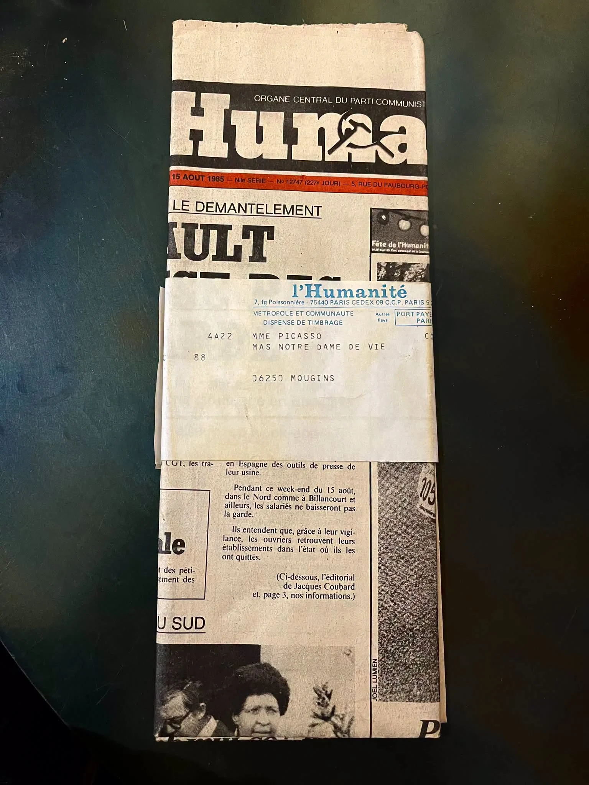

Publication relayée par le PCF 79
Un exemplaire de L’Humanité adressé à Jacqueline Picasso
Date de mise à jour indiquée par Facebook · 28 septembre 2026
Texte de la publication · Patrick Maurieres
Trouvaille du jour : cette édition de L’Humanité du 15 août 1985, adressée à Jacqueline Picasso qui vit seule dans cette immense maison, dernier lieu de vie de Pablo disparu en 1973. Elle était donc abonnée au quotidien, qui était encore l’organe central du Parti communiste français, comme l’avait été son époux, Pablo Picasso. Elle n’a pas ouvert ce journal. En 1985, Jacqueline Picasso traverse une profonde dépression. Un an plus tard, elle met fin à ses jours. Il y a quelque chose d’étrange à tenir entre ses mains un journal qui lui était destiné.
À la Une de cette édition, la mobilisation des dockers du Havre, qui refusent de décharger du charbon en provenance d’Afrique du Sud, alors sous le régime de l’apartheid. Mandela croupit encore dans son bagne. Le Havre… Ce simple nom fait remonter d’autres souvenirs. Quelques années auparavant, dans cette même ville, nous, les jeunes communistes, avions déversé des sacs de charbon dans les bureaux de la sous-préfecture. C’était notre manière, concrète, de protester contre l’apartheid. Nous avions eu, je crois, droit à un rappel à l’ordre. Mais ma mémoire, après toutes ces années, laisse quelques blancs… Et puis il y a cet autre souvenir : 1985, mon départ du Havre, direction Montluçon.
Je me souviens du déménagement, effectué avec le camion de mes amis marionnettistes havrais, Les Gribouilles, et l’ami Patrice Robin, qui deviendra plus tard écrivain. Un drôle d’attelage : un petit camion et deux voitures, deux enfants en bas âge. Toute une vie, ou du moins une partie de celle-ci, entassée dans quelques véhicules, avec cette insouciance propre aux départs dont on ne mesure pas encore qu’ils marquent la fin d’une époque.
Quarante et un ans ont passé depuis ce mois d’août. Le journal, lui, n’a pas vraiment jauni. Les combats, eux, ont changé de visage. Hier, l’Afrique du Sud et l’apartheid ; aujourd’hui, la Palestine. Et pourtant, le martyre du peuple palestinien était déjà présent, dans l’histoire de ces années-là.
En feuilletant, le plus délicatement possible, cette vieille édition, tout semble soudain proche : le Havre, les dockers, les copains, les amis disparus, ceux que la vie a éloignés, les engagements de jeunesse… Et cette sensation que le temps passe sans réussir à tout emporter. Constat aussi : L’Humanité n’a pas perdu sa boussole et ses fondamentaux, mais à part quelques acariâtres qui en doute. L’actualité de ce 15 août 1985 est certes assez modeste. Le journal consacre toutefois un long article au Rainbow Warrior, dont le sabotage, quelques semaines plus tôt, venait de bouleverser l’actualité internationale et réserve quasiment une page à la création artistique. Je replie délicatement le journal et remet son bandeau qui va devenir dorénavant un objet sacralisé que je vais faire encadrer.
Repères éditoriaux
Nous avons relayé le récit de Patrick Maurières autour d’un exemplaire de L’Humanité du 15 août 1985 adressé à Jacqueline Picasso. Les indications historiques et le commentaire restent ceux de son texte.

Sources
Patrick Maurieres · publication relayée par le PCF 79 · fil Facebook et rapport Meta · AR-0002-FB-00674
À lire aussi · « Le gouvernement est constitué ». Cinq ministres communistes à la une en 1945